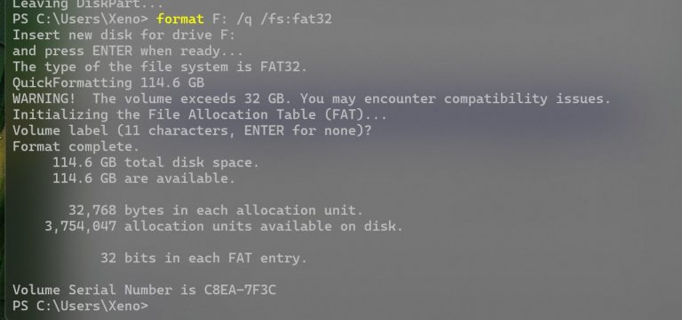

Em mais um capítulo da série “antes tarde do que mais tarde”, a Microsoft decidiu extinguir o limite que fazia o Windows 11 suportar somente partições FAT32 com até 32 GB de tamanho. Com a mudança, o novo limite passa a ser de 2 TB, o que condiz com as capacidades dos dispositivos de armazenamento atuais.
O limite de 32 GB é curioso porque ele foi implementado de forma improvisada, digamos assim. Essa restrição surgiu no Windows 95 e vinha sendo “herdada” pelas versões sucessoras do sistema operacional.
Dave Plummer, ex-desenvolvedor da Microsoft, explicou em postagem no X/Twitter em março que foi responsável pela caixa de diálogo Formatar do Windows que impõe esse limite:
(…) Tive que decidir qual tamanho da “folga de cluster” seria exagerada, e isso acabou restringindo o tamanho do formato de um volume FAT a 32 GB. Esse limite também foi uma escolha arbitrária naquela manhã, e uma que ficou com a gente como um efeito colateral permanente.
Dave Plummer, ex-desenvolvedor da Microsoft
FAT32 com até 2 TB no Windows 11
Outro detalhe curioso é que o Windows 11 e versões anteriores já suportam unidades com sistema de arquivos FAT32 com até 2 TB de tamanho, só não permite que essas partições sejam criadas de modo nativo. Isso obriga o usuário a recorrer a alguns truques, como usar ferramentas de terceiros para esse fim.
Parece que alguém da Microsoft finalmente olhou para esse ponto e decidiu promover uma mudança no Windows 11. Mas com ressalvas.
A primeira ressalva é que, por enquanto, o suporte à criação de partições FAT32 com até 2 TB está restrita à versão de teste Canary do Windows 11 (compilação 27686) para quem participa do programa Windows Insider. Não está claro quando a mudança chegará à versão final do sistema.
A segunda é que a novidade vale apenas para a instrução format digitada em linha de comando, via CMD, por exemplo (vide a imagem abaixo). A opção Formatar que aparece quando você seleciona a unidade com o botão direito do mouse ainda exibirá o limite de 32 GB, pelo menos até a Microsoft decidir mudar esse componente também.
Por fim, o Verge observa que o Windows 11 continua suportando arquivos individuais com limite de até 4 GB de tamanho em volumes FAT32.
De todo modo, o sistema de arquivos FAT32 já não é tão utilizado quanto antigamente. Hoje, ele é mais implementado em cartões de memória ou pendrives, por exemplo. Mas, para esses dispositivos, pode ser mais interessante o padrão exFAT. Já para SSDs e HDs no Windows, o NTFS é o sistema de arquivos padrão.